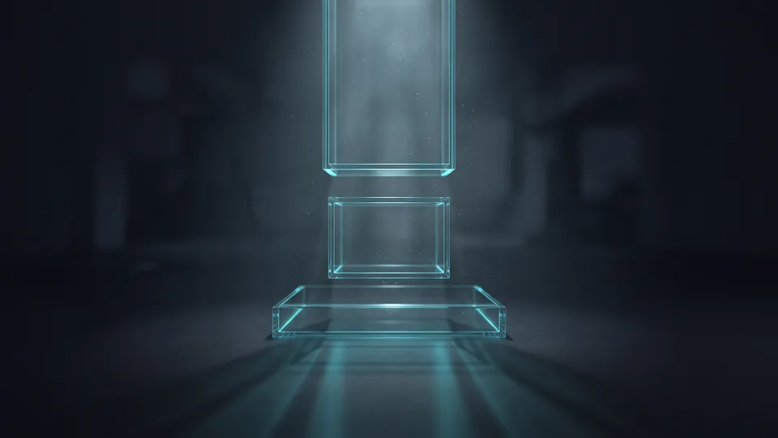

Mecra Seçimi Neden Format Kararından Önce Gelir?
Format kararı mecra seçiminin ardından gelir, çünkü her platform farklı bir kullanıcı niyeti taşır. Keşif akışındaki kişi ile teklif arayan kişi aynı yaratıcıya tepki vermez. Aynı ürün, iki mecrada iki ayrı soruya cevap verir. Sosyal medya reklam yönetimi bu nedenle panel ayarıyla değil, kitlenin niyet haritasıyla başlar.
Sosyal medya reklam yönetimi, mecra seçimi ile format kurgusunu tek plan altında toplayan operasyon disiplinidir. Hesap açmak kolaydır. Zor olan kısım, doğru kitleye doğru biçimi göstermektir. Panel arayüzü herkese açıktır; fark yaratan şey karar sırasıdır. Reklam yönetimi sosyal medyada tek panelin ayarlarından ibaret değildir.
Türkiye'de dijitalleşen işletme sayısı hızla artıyor. ETBİS 2025 raporuna göre e-ticaret yapan işletme sayısı 634.611'e ulaştı. Aynı çalışmanın bakanlık duyurusunda pazarın genel görünümü özetleniyor. Rekabet büyüdükçe mecra farkı keskinleşiyor. Aynı harcama, iki platformda çok farklı sonuç üretebiliyor.
Niyet Haritasını Çıkarmanın Pratik Yolu
Niyet haritası, kitlenin satın almaya ne kadar yakın olduğunu gösteren basit bir sıralamadır. Üç kutu çiziyoruz: haberi yok, karşılaştırıyor, karar veriyor. Her kutuya tek mecra ve tek biçim yazıyoruz. Kutular dolunca hangi platformun hangi işi yapacağı netleşir.
Meta, TikTok ve LinkedIn Reklam Araçları Nasıl Ayrışır?
Üç panel aynı işi yapmaz. Ayrım en çok yaratıcı ömründe ve kitle büyüklüğünde görünür. Bir mecrada iki hafta dayanan video, diğerinde çok daha erken yorulur. Bu yüzden seçim, panel özelliğine değil ürününüzün karar süresine ve haftalık üretim kapasitenize bağlıdır. Maliyet baskısı da bu iki değişkenle birlikte yükselir.
Meta tarafında otomatik yerleşim tek yaratıcıyı çok alana dağıtır; ölçek burada kolaydır. TikTok aynı seti kullanmaz; izleme süresi ve etkileşim hızı kitleyi şekillendirir. LinkedIn ise unvan ve sektör alanlarıyla doğru karar vericiye ulaştırır, kişi başı maliyeti yükseltir. Sosyal medya reklam yönetiminde asıl fark, panel isimlerinde değil bu davranış ayrımlarında çıkar. Kitle büyüklüğünü panel tahminine göre değil, satış hacmine göre seçiyoruz. Meta Ads kurgusunda kampanya mimarisini sadeleştirir, test yükünü yaratıcı tarafına bırakırız.
Pinterest ve YouTube Shorts Panelleri Ne Zaman Devreye Girer?
Bu iki panel ana mecra değil, tamamlayıcı alan olarak iş görür. YouTube Shorts, dikey video üreten ekiplere ek maliyet çıkarmaz; atlanabilir kurguda ilk saniyedeki kanca tutmazsa izlenme hızla düşer. Pinterest ise arama ve planlama davranışına yaslanır; kullanıcı çoğu zaman bugün için değil, ileri bir tarih için bakar. Bu yüzden Pinterest'i sezon takvimi belirgin kategorilerde, ana mecra oturduktan sonra açıyoruz.
Yaratıcı Üretim Yükü Ne Kadar Değişir?
Dikey video üreten ekip, TikTok ve Reels tarafında aynı varlığı kullanabilir. LinkedIn'de tek görsel ve net bir başlık çoğu zaman yeterli olur. Haftalık üretim kapasiteniz düşükse kampanyayı tek mecrada tutun; ikinci mecrayı ancak arşiviniz üç yaratıcıyı besleyebildiğinde açın. Sosyal video üretimi tarafında bu yükü şablonlarla azaltıyoruz.
Hangi Reklam Formatı Hangi Huni Aşamasına Uygun?
Format seçimi huni aşamasına bağlıdır. Kısa dikey video keşif için, karusel karşılaştırma için, dinamik ürün ve form reklamı karar aşaması için uygundur. Yanlış aşamaya konan biçim bütçeyi tüketir, sonucu geciktirir. Aşamayla biçim tuttuğunda tıklama maliyeti de kendiliğinden geriler. Biçimle aşamayı eşleştirmek, ek harcama istemeyen en hızlı kazanımdır.
Kısa video, ilk üç saniyede sorunu gösterdiğinde çalışır. Karusel, ürünle alternatifini yan yana koymaya yarar. Katalog reklamları, ürün derinliği olan işletmelerde tıklamayı ucuzlatır. Buradaki eşik ürün sayısı değil, gerçek çeşitliliktir; renk varyantları katalog derinliği saymaz. Başlık, görsel oranı ve stok alanı eksikse besleme hatalı okunur; katalog reklamını açmadan önce beslemeyi denetliyoruz. Form reklamı B2B tarafında görüşme talebini hızlandırır. Sosyal medya reklam yönetimini kolaylaştıran en pratik hamle, biçimi huni aşamasına sabitlemektir.
Statik Görsel Ne Zaman Videoyu Geçer?
Net bir teklif, tarih ya da kampanya koşulu iletiyorsanız statik görsel daha hızlı okunur. Video, anlatılacak bir kullanım sahnesi varken öne geçer. Metin yoğun görsellerden kaçının; okunurluk düşer. Kancayı ilk kareye taşıyın. İki biçimi aynı kampanyada denemek, kazananı kısa sürede gösterir.
Tek Çekimden Üç Format Çıkarmak
Bir çekim üç varlığa dönüşebilir. Dikey kurgu akış reklamına, kare kurgu karusele, yatay kurgu web sitesine gider. Küçük ekipler için bu yöntem üretim maliyetini gözle görülür biçimde düşürür. Arşivi tek klasörde tutmak sonraki kampanyada zaman kazandırır.
Kampanya Kurulum Adımları ve Bütçe Eşikleri
Kurulum sırası şudur: ölçüm altyapısı, kitle tanımı, yaratıcı seti, bütçe eşiği, öğrenme dönemi. Sıra bozulunca veri kirlenir ve karar gecikir. Küçük bütçede tek kampanya, iki reklam seti, üç yaratıcı ile başlamak sonucu okunur kılar. Karmaşık kurulum, hangi değişkenin işe yaradığını gizler. Sosyal medya reklam yönetimi bu sadelikten güç alır.
Kurulumu her müşteride aynı sırayla yapıyoruz. Aşağıdaki eşikler, kendi kampanyalarımızda ölçtüğümüz çalışma kurallarıdır.
- Dönüşüm olaylarını doğrulayın; hatalı olay tüm optimizasyonu bozar.
- Tek birincil hedef seçin: mesaj, form ya da satın alma.
- Reklam seti başına günlük bütçeyi, hedef edinme maliyetinin en az beş katı kurgulayın.
- Öğrenme dönemi optimizasyon olayı sayısına bağlıdır; eşiği aşmadan yaratıcıyı değiştirmeyin.
- Kazanan biçimi ikinci mecraya, ancak istikrarlı sonuç sonrasında taşıyın.
Sosyal Medya Reklam Yönetiminde Bütçeyi Nasıl Bölüyoruz?
Tek mecrada anlamlı sonuç almadan ikincisine geçmiyoruz. Ağırlığı kanıtlanmış kanala veriyoruz, kalan payı teste ayırıyoruz. Test payını toplam bütçenin yarısına çıkarmıyoruz. Performans pazarlaması tarafında bu dağılımı her ay yeniden kuruyoruz.
Öğrenme Dönemini Bozan Üç Müdahale
Bütçeyi gün içinde yükseltmek ilk müdahaledir. Kitleyi genişletmek ikincisidir. Hedefi değiştirmek ise en pahalısıdır. Üçünü de haftalık ritme bağlıyoruz; günlük tepkiyle karar vermiyoruz.
“2024 yılında 600 bin 800 olan e-ticaret yapan işletme sayısı, 2025'te 634 bin 611'e yükseldi.”
— Ticaret Bakanlığı, Türkiye'de E-Ticaretin Görünümü 2025
Yaygın Hatalar ve Karar Vericinin Kontrol Listesi
En sık gördüğümüz hata, her mecrada aynı yaratıcıyı yayınlamaktır. İkinci hata, sonuç alınmadan bütçeyi bölmektir. Üçüncüsü ise biçimi kitleye göre değil, ekip alışkanlığına göre seçmektir. Sosyal medya reklam yönetimi tarafında ilk denetlediğimiz üç başlık bunlardır. Üçü düzelince bütçe aynı kalsa bile sonuç değişir.
Panel içi otomasyon her şeyi çözmez. Kitle daraldıkça maliyet artar, yaratıcı yorulunca tıklama düşer. Bu yüzden mecra sayısını değil, yaratıcı çeşidini artırıyoruz. Yorum ve mesaj kutusunu da akışın parçası sayıyoruz; tekrar eden soruları sonraki metne taşıyoruz. Rakip panelini kopyalamak işe yaramaz; katalog derinliği ve bilinirlik aynı değildir. Reklam yönetiminin sosyal medya ayağını üretim takvimiyle birlikte planlıyoruz. Takvim boşaldığında kampanya değil, arşiv biter.
Küçük Bütçeyle Başlarken Nereye Odaklanmalı?
Kural sadedir: tek mecra, tek hedef, üç yaratıcı. Kitleyi genişletmek yerine mesajı keskinleştirin. Sonuç geldiğinde ikinci platformu açın. Tek sayfalık kontrol listesi çoğu ekibe yetiyor. Sırayı bozan işletmeler iki panelde de yetersiz veri toplar.
Aylık Denetimde Baktığımız Dört Satır
İlk satır, hangi yaratıcının hâlâ tıklama getirdiğidir. İkincisi, kazanan biçimin durduğu huni aşamasıdır. Üçüncüsü, mesaj kutusuna düşen taleplerin niteliğidir. Dördüncüsü, bütçenin kanıtlanmış kanal ile test arasındaki dağılımıdır. Dört satırı tek sayfada tutuyoruz; rapor uzadıkça karar yavaşlar.

Mecra ve Reklam Formatı Karşılaştırma Tablosu
| Mecra | Öne Çıkan Format | Güçlü Huni Aşaması | Dikkat Edilecek Nokta |
|---|---|---|---|
| Meta (Instagram/Facebook) | Karusel, koleksiyon, Reels | Orta ve alt huni | Yaratıcı yorulması hızlı olur |
| TikTok | Kısa dikey video | Üst huni keşif | Reklam dilinde içerik gerekir |
| Tek görsel, form reklamı | Alt huni B2B | Kişi başı maliyet yüksektir | |
| YouTube Shorts | Dikey video, atlanabilir video | Üst ve orta huni | İlk saniye kancası şarttır |
| Statik görsel, katalog | Keşif ve planlama | Sezon takvimine bağımlıdır |
Kapsamınıza uygun yol haritasını birlikte çıkaralım; adımları ve zamanlamayı netleştirelim.
Kapsam çıkaralım Hizmet sayfasını görDoğru mecra ile doğru biçim buluştuğunda bütçeyi artırmadan da yol alınır. Kararı sezgiye değil, niyet haritasına bırakın. Ekibinizin haftalık kapasitesi planın sınırını çizer. Küçük ekiplerde sade bir kurgu, kalabalık bir kurulumdan daha verimli çalışır. Mecra ve format eşleşmesini birlikte kurmak isterseniz teklif sayfamız üzerinden kısa bir görüşme planlayalım.